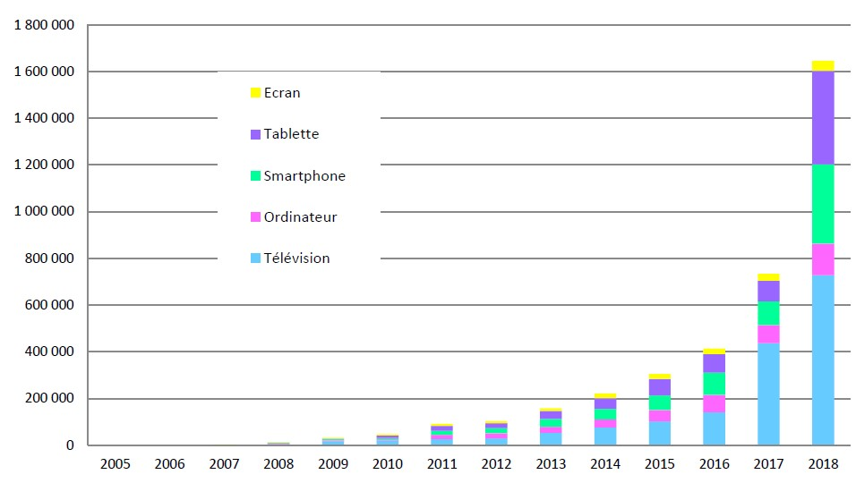

Présentation
Les écrans nuisent-ils au développement sociocognitif de l’enfant ?
L'avènement des technologies numériques a transformé fondamentalement la manière dont
les enfants interagissent avec le monde qui les entoure.
Les écrans, qu'il s'agisse de tablettes, de téléphones intelligents ou d'ordinateurs,
sont désormais des compagnons quotidiens de l'enfance moderne.
Cette omniprésence soulève des questions essentielles sur la façon dont l'utilisation
intensive de ces dispositifs peut influencer les capacités
sociocognitives en pleine formation chez les jeunes esprits.
L'ère numérique offre indubitablement des avantages incommensurables, facilitant l'accès à une myriade
de ressources éducatives, stimulant le développement cognitif par des interfaces interactives, et préparant
les enfants à évoluer dans un monde de plus en plus axé sur la technologie.
Cependant, en parallèle à ces opportunités, émerge une toile complexe de défis et de préoccupations
quant aux conséquences de l'exposition prolongée aux écrans sur le tissu même des compétences sociocognitives.
Ainsi, cette présentation vise à explorer de manière approfondie l'impact des écrans sur
les capacités sociocognitives des enfants.
Nous plongerons dans les nuances de cette interaction complexe, pesant les avantages cognitifs
contre les risques sociaux, et examinant comment les parents,
les éducateurs et la société dans son ensemble peuvent guider judicieusement l'utilisation
des écrans pour assurer un équilibre
sain dans le développement global de la jeune génération.
Origine du débat
Origine et évolution

Évolution du nombre d'articles de presse publiés annuellement de 2005 à 2018 sur le sujet de
l'effet de l'utilisation des écrans sur la santé des enfants et des adolescents (source HCSP).
De nos jours, on constate une forte croissance du temps d'écran chez les adultes.
Nous sommes passés de 1h23 en 1974 à 2h09 en 2010, ce qui pourrait influencer les enfants.
Cependant, cette influence comporte des aspects négatifs, tels que l'obésité et des difficultés
dans le développement du langage et cognitif.
Une étude appelée Elfe a été menée entre 2011 et 2017 en collaboration avec 349 maternités,
portant sur 17 000 familles totalement différentes
à travers la France dans le but d'observer cette croissance.
La situation concernant les impacts des écrans sur les enfants s’empire au cours des années.
On observe une augmentation du nombres d’enfants présentant des troubles du comportement, de la
communication et des difficultés d’apprentissage.
Il a été démontré que le progrès numérique en est la cause. En effet, les écrans ont un effet sur
le développement cérébral des enfants
, il cause notamment des retards d’apprentissage par exemple du langage pour ceux qui utilisent
régulièrement ces écrans.
Les écrans ont un impact important sur les capacités cognitives de l’enfant, ils font maintenant
partie de nos vies.
En effet, plus de deux tiers des enfants de deux ans regardent la télévision régulièrement, ce
qui peut représenter la gravité du problème.
Une étude menée par Madigan entre 2008 et 2010 démontrerait que passer plus de temps devant les
écrans que d’habitude induit une diminution
des capacités cognitives et pourrait faire baisser le QI de 4,25 points.